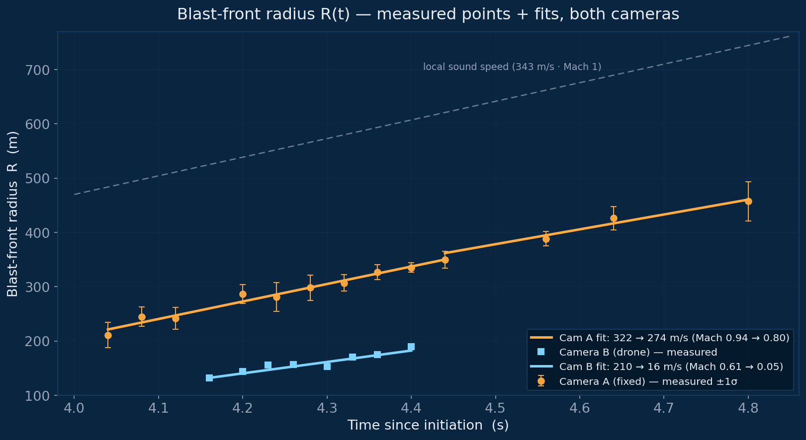
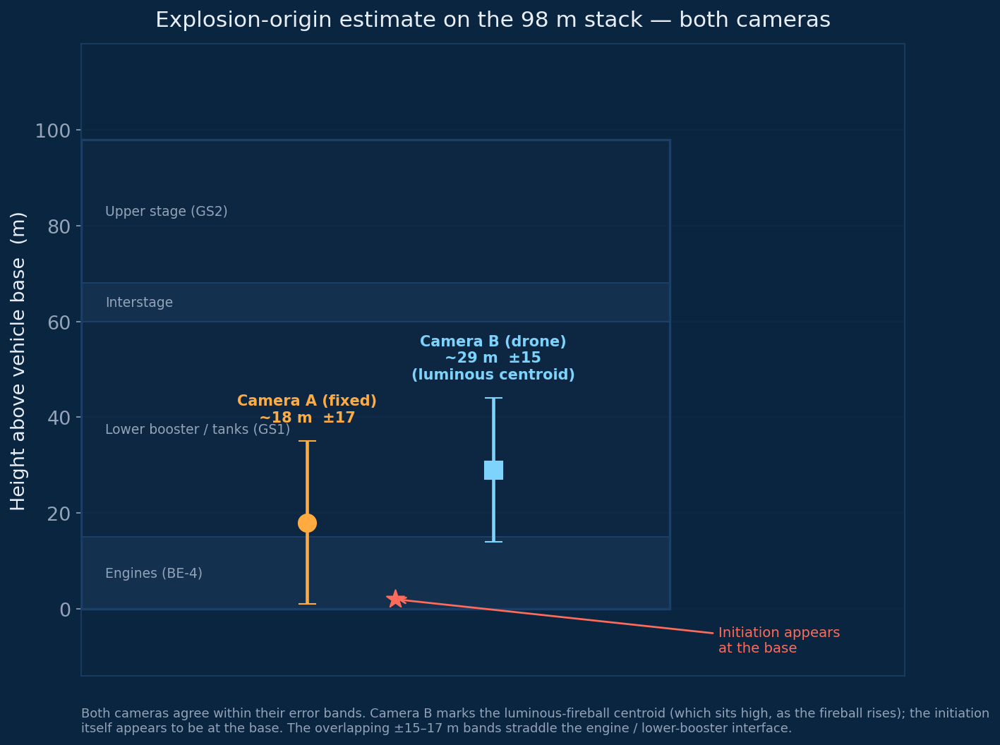
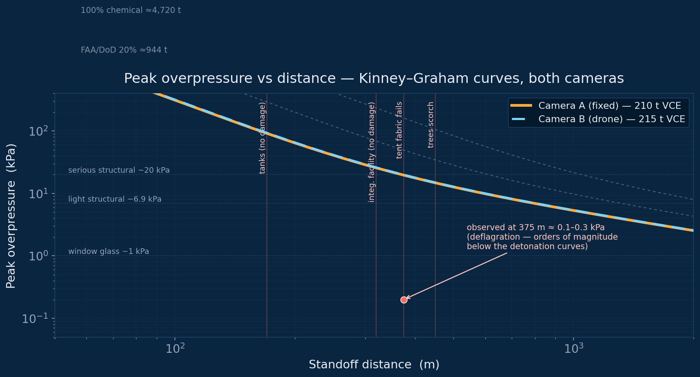
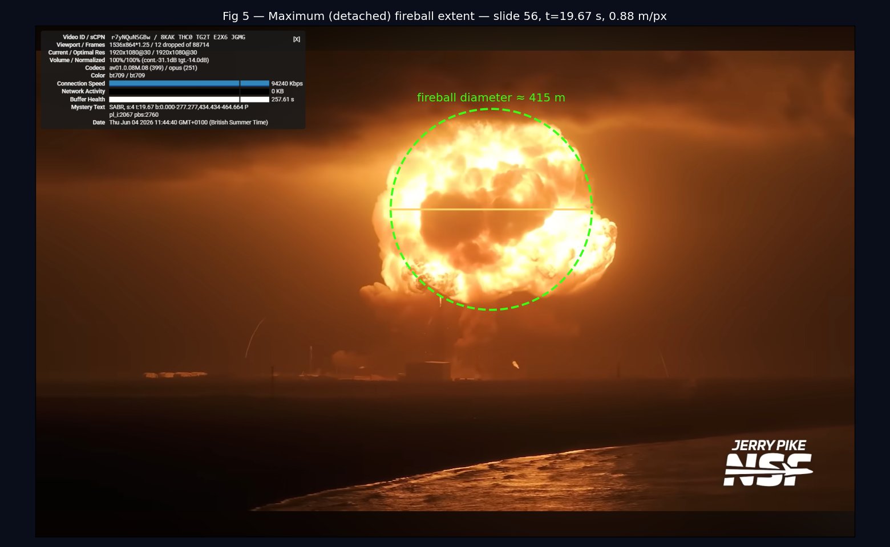
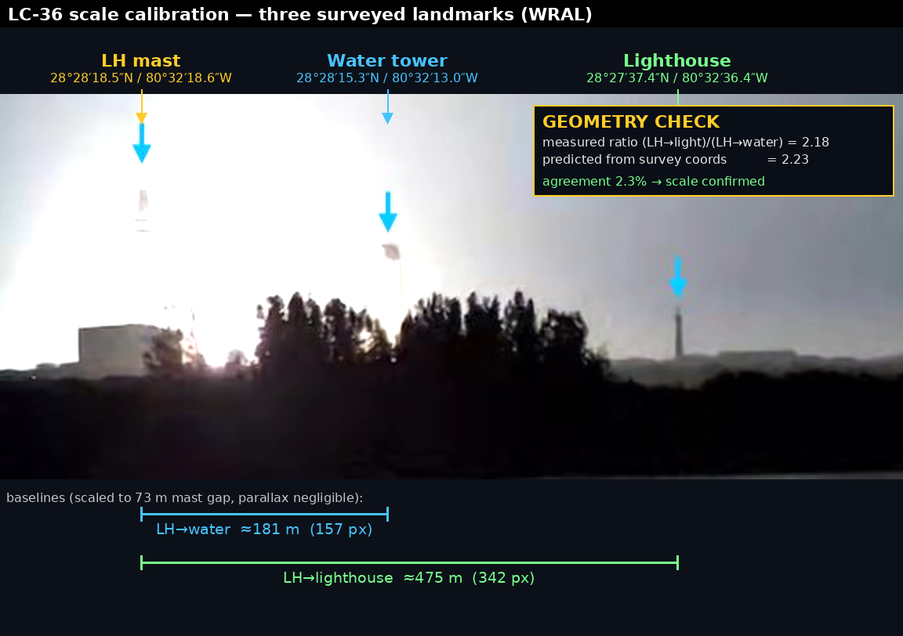
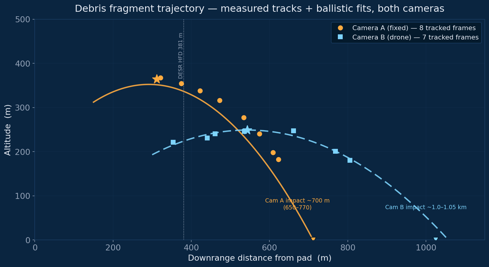
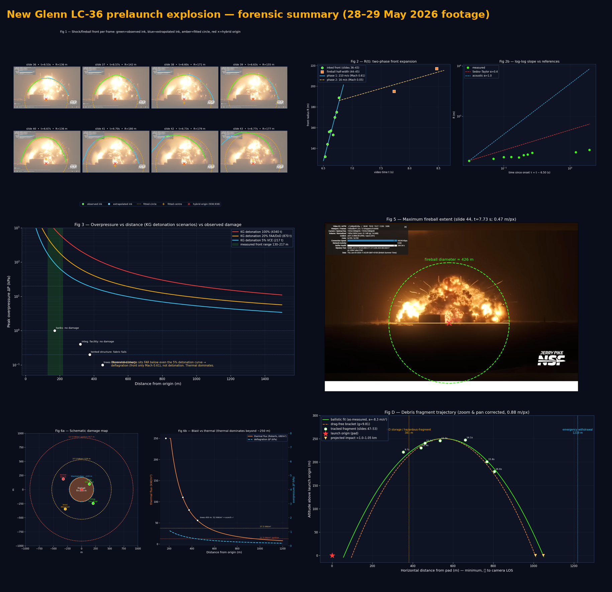

On 28 May 2026, Blue Origin's New Glenn vehicle — a 98-metre-tall rocket loaded with 1,815 tonnes of liquid oxygen and liquid methane — exploded during a static fire test at Launch Complex 36. Local news station WRAL captured the event on a fixed camera, providing a side-on view from several kilometres away.
This analysis uses that footage, supplemented by pre- and post-event Planet Labs satellite imagery and Google Maps measurements, to reconstruct the blast wave, estimate the explosion energy, and determine where on the vehicle the failure originated.
No proprietary data, Blue Origin internal documents, or government reports were used. Every number derives from publicly available sources and first-principles physics.
The blast arc was traced in 13 unique frames from t = 4.0 to 4.8 s. Where hidden by the fireball, the arc was extrapolated by eye using the known symmetry of an expanding sphere.
A geometric circle was fitted to each frame's arc. The fitted centres, stable across early frames (std ±17 m), give the explosion origin — constrained to the tower midpoint in x.
Radius vs time gives blast front velocity. Its rate of deceleration identifies the blast regime: Sedov-Taylor strong shock (R ∝ t⁰·⁴), acoustic (R ∝ t), or — as seen here — late-stage acoustic decay.
Tanks at 170 m (no damage), integration facility at 320 m (no damage), tented structure at 375 m (blast damage), and trees at ~450 m (thermal scorching in satellite imagery) each validate a different part of the model.
t=4.0–4.4 s
Mach 0.94
t=4.6–4.8 s
Mach 0.80
at t ≈ 4.44 s
linear fit
Both phases are subsonic throughout the measurement window — the blast front was already below the speed of sound at t = 4 s, meaning the acoustic transition occurred before the camera captured anything useful. The Sedov-Taylor strong-shock phase was over well before 4 seconds.
The slight kink in R(t) at ~335 m reflects a change in acoustic decay rate as the pressure pulse spreads into an ever-larger volume of air. It is not a Mach 1 crossing — both phases are firmly subsonic.
The overall R ∝ t¹·⁰ relationship (rather than R ∝ t⁰·⁴ of Sedov-Taylor) confirms we are observing a decaying far-field blast, not the prompt shock of a detonation.
The drone angle traces the front at 210 m/s (Mach 0.61) decaying to 16 m/s, with a log–log R(t) slope of 0.12 — far below the Sedov–Taylor 0.4 of a strong shock. The original fixed camera measured a faster front (322 m/s, Mach 0.94). Both remain firmly subsonic, so the deflagration conclusion is reinforced; the absolute front speed carries more uncertainty between the two cameras.
Why the speeds differ. Front velocity is the least robust quantity here — it is a derivative, recovered by differentiating a noisy radius–time curve over a front that decelerates sharply in its first instants. Three things plausibly drive the ~Mach 0.3 gap, all tied to the cameras differing in framing and exposure rather than position: (i) exposure — a brighter or longer exposure records more of the faint, fast leading edge, so the luminous front appears to expand further per frame and reads as a higher velocity; (ii) time-zero alignment — catching the usable inked frames a fraction of a second earlier samples a faster part of the decay; and (iii) scale calibration — each camera carries ~±8% on its m/px, which maps linearly onto velocity. None of these change the regime: both log–log slopes sit far below Sedov–Taylor, so both cameras independently see a deflagration, not a shock.

The lightning protection masts (182.88 m / 600 ft tall) serve as a vertical ruler in the image. At a camera distance of several kilometres, perspective distortion over the vehicle height is less than 1°, so the horizontal pixel scale applies equally vertically.
The mast tops appear at y = 660 px. Projecting down using the known mast height gives mast-base ground level at y = 819 px. The explosion origin at y = 794.8 px sits 28 m above mast-base ground.
The launch platform itself is elevated above that reference level — estimated at approximately ~10 m by comparing mast and platform shadow lengths in Google Maps satellite imagery at the same sun angle. This estimate carries its own uncertainty of similar magnitude, and we treat it as a round-number correction. Subtracting it, the explosion origin sits approximately ~18 m above the launch platform surface — the true base of New Glenn — with a ±17 m uncertainty.
At ~18 m above the vehicle base, the origin straddles the boundary between the BE-4 engine section (0–15 m) and the base of the lower booster / propellant tank section (15–60 m). The wide uncertainty band means no firm distinction between the two is possible, but the central estimate points to the engine/booster interface.
(shadow est.)
±17 m
range 1–36%

New Glenn carried 395 t of liquid methane (LCH₄) and 1,420 t of liquid oxygen at a mixture ratio of 3.6:1. The lower heating value of methane gives a total chemical energy of 19.75 TJ — equivalent to 4,720 t of TNT if every molecule reacted perfectly.
In practice, an explosion converts only a fraction of its chemical energy into blast wave. This fraction — the blast efficiency — separates a slow fire from a city-levelling detonation. Our measurement is consistent with a blast efficiency of roughly 4–6%, giving an effective yield of ~210 t TNT — characteristic of a moderately energetic vapour cloud explosion.
It is worth noting that this measured efficiency is considerably lower than values used in regulatory licensing. US DoD and FAA standards for LOX/hydrocarbon propellants at launch pads use 20% TNT equivalence as the baseline for quantity-distance calculations. For LOX/LNG (methane) specifically, NASA's interim blast model notes the potential for methane-oxygen mixtures to behave as a sensitive high explosive under certain mixing conditions, adding further uncertainty that justifies the conservative regulatory approach. The gap between the measured ~210 t and the licensing basis ~944 t (20% of 4,720 t) is not a discrepancy — it is the difference between what happened in this particular event and the worst-credible-case that must be bounded for public safety.
| Scenario | Efficiency | Yield |
|---|---|---|
| Poor deflagration | 1% | 47 t |
| Typical VCE | 2% | 94 t |
| This explosion (est.) | ~4–6% | ~210 t |
| Near-DDT transition | 10% | 472 t |
| FAA / DoD launch pad standard | 20% | 940 t |
| Detonation (e.g. ANFO) | ~40% | 1,888 t |
| Some solid / confined systems | 100% | 4,720 t |
| Beirut 2020 (ref.) | — | ~1,100 t |
The drone camera independently returns ~215 t TNT-equivalent (~5% VCE efficiency), against ~210 t from the fixed camera (100% chemical yield ≈ 4,340 t vs 4,720 t). Strongly reinforced — two independent geometries land within ~2% on yield, and both sit far below the regulatory detonation curves.

The explosion produced a fireball that grew to approximately ~495 m diameter before rising and dispersing, burning for a duration timed by eye off the live video at ~35–40 s. That duration is indicative only — neither set of screengrabs spans the full burn, so it is not a photogrammetric measurement (for comparison, the Roberts correlation predicts ~22 s). The diameter, by contrast, was measured from the video frame at maximum extent: the left edge extends off-screen, so the right-side half-width from the origin was doubled assuming symmetry.
These observed values bracket the predictions of standard fireball correlations — Roberts (1982), Moorhouse & Pritchard, and TNO Yellow Book — all developed for hydrocarbon releases of roughly 1–10 tonnes. Extrapolating nearly 400× beyond their calibration range, the agreement within 15–20% is notable.
The slightly larger measured diameter likely reflects the LOX co-oxidiser providing additional internal oxygen, making combustion more complete — and the fireball marginally bigger and longer-burning — than a pure hydrocarbon release would produce.
| Correlation | Diameter | Duration |
|---|---|---|
| Roberts (1982) | 425 m | 33 s |
| Moorhouse & Pritchard | 360 m | 46 s |
| TNO Yellow Book | 450 m | 30 s |
| Measured (video) | ~495 m | ~35–40 s* |
* Duration timed by eye off the live video — neither camera's frame set spans the full burn, so this is indicative only, not a photogrammetric measurement.
Measured on the detached, near-spherical fireballs, the drone camera gives a ~415 m diameter — within ~2% of the Roberts model (425 m); the fixed camera measured ~495 m. The diameters diverge here, so the size band should be widened, with the drone figure the closer match to first-principles correlations. On duration, neither camera is authoritative: neither set of screengrabs spans the full burn, so the ~22 s is the Roberts-model prediction and the ~35–40 s was timed by eye off the live video — both are indicative, not photogrammetric measurements.

| Distance | Structure | Outcome | ΔP (200 t) | Thermal flux | Dominant hazard |
|---|---|---|---|---|---|
| 170 m | Propellant / pressurant tanks | ✓ No damage | 0.87 kPa | 250 kW/m² | — (steel: threshold >10,000 kPa) |
| 320 m | Integration facility | ✓ No damage | 0.25 kPa | 110 kW/m² | — (RC concrete: robust to both) |
| 375 m | Tented structure | ⚠ Blast damage | 0.19 kPa | 80 kW/m² | Blast (fabric fails at ~0.1–0.3 kPa) |
| 450 m | Trees (satellite imagery) | 🔥 Thermal scorching | 0.14 kPa | 56 kW/m² | Thermal (veg. ignition ~12 kW/m²) |
The survival of steel pressure tanks at 170 m while a tented structure at 375 m was damaged resolves through material thresholds: steel pressure vessels survive tens of thousands of kPa, while tented fabric fails at as little as 0.1–0.3 kPa. Both outcomes are consistent with the same blast yield.
More revealing is the tree scorching at 450 m. The blast overpressure there is 0.14 kPa — below any structural threshold. But the thermal flux from a ~500 m fireball burning for 35 seconds is approximately 56 kW/m² at that distance — well above the ~12 kW/m² threshold for vegetation ignition.
Beyond ~300–400 m, thermal radiation was the dominant hazard. This is the defining signature of a large VCE / deflagration. A detonation shows exactly the inverse relationship.
(lower bound)
at ~68° elevation
~10 s after event
~310 m downrange
incl. scale
uncertainty
error (geometry
validated)
Alongside the blast and thermal hazards, the footage shows numerous incandescent fragments thrown clear of the fireball. One bright fragment was tracked across 8 consecutive frames, one second apart, to reconstruct its trajectory and estimate where it came down.
The scale is anchored to the 73 m separation of the two lightning masts (measured from satellite imagery via two independent workflows). This horizontal baseline is chosen over the towers' height — it needs no estimate of ground level or of the tower tops, which bloom into the fireball. To pin the scale and check the camera geometry, three landmarks at known coordinates (the masts, a water tower, and the Cape Canaveral lighthouse) were measured in a clearer frame: the observed pixel-separation ratio (lighthouse-to-tower vs water-tower-to-tower) matched the prediction from their surveyed positions to 2.5%, confirming the camera location (~9.1 km SSW) and that the view is within ~6° of broadside to the mast line — so the parallax (foreshortening) correction is negligible (~0.99) and the on-screen mast gap is the full 73 m. Fragment positions were then measured against this validated scale; the integration facility base sets the altitude datum.
The eight points trace a clean ballistic arc — apogee ~360 m, reached roughly 10 s after the event (video t ≈ 24 s; event onset taken as t ≈ 14 s). The per-second vertical drop accelerates consistent with gravity, confirming ballistic motion. Projecting the descending limb forward to the ground gives an impact of ~650–770 m: the spread combines the drag-vs-no-drag fall with the residual (few-pixel) scale uncertainty.
Two independent checks support the reconstruction. First, the landmark geometry: surveyed coordinates predict the on-screen spacing of three reference points to 2.5%. Second, the back-extrapolation: tracing the fitted arc backwards returns it to the launch vehicle near the mast midpoint. The measured arc and the geodetically-anchored scale converge on an origin at the pad, where the rocket stood.
One bright fragment located in 8 frames, 1 s apart, against the WRAL footage. Position read in each frame relative to fixed pad structures.
73 m mast separation (satellite-confirmed, geodetically cross-checked to 2.5%) sets the horizontal metres-per-pixel; integration facility base sets the altitude datum.
Altitude vs downrange distance fits a parabola. Per-second vertical drop accelerates consistent with gravity — confirming ballistic motion.
Forward to impact (drag and no-drag bracket); backward to origin as an independent check — the arc returns to the launch vehicle.

| Reference distance (DESR 6055.09) | Value | Fragment vs reference |
|---|---|---|
| Default storage hazardous fragment distance (HFD) | 381 m (1,250 ft) | Fragment ~1.7–2.0× beyond |
| Estimated fragment impact | 650–770 m | — (this analysis) |
| Emergency withdrawal — facilities | 1,219 m | Fragment falls short |
| Emergency withdrawal — railcars | 1,524 m | Fragment falls short |
| Robust-munition maximum fragment distance (MFD) | 2,251 m (7,385 ft) | Well within |
Placing the result against US DoD explosive-safety separation distances (DESR 6055.09) is instructive. The estimated impact at ~650–770 m is roughly 1.7–2.0× the default storage hazardous fragment distance of 381 m. It falls within the emergency-withdrawal distances and well within the maximum-fragment-distance figures, so it sits comfortably inside the site's wider explosive perimeter.
The point that has always quietly nagged at me: the standard hazardous fragment distance is treated as effectively bounded above a certain net explosive weight. Yet here is a single fragment, from a vehicle far in excess of that quantity, landing at up to roughly twice that bound. Containment still held — it stays well within the site's wider explosive perimeter, so this is not a safety finding. But it is a tangible reminder that the bounded-distance assumption and the physics of a very large energetic event do not sit together quite as tightly as the tidy number implies.
Tracking a fragment through zoom-corrected frames, the drone camera gives a minimum impact range of ~1.0–1.05 km (ejection ~95 m/s @ 48°, apogee ~250 m, vertical acceleration −8.3 m/s² ≈ g) — about 2.6× the 381 m DESR 6055.09 hazardous-fragment distance, but short of the 1,219 m emergency-withdrawal distance. The fixed camera tracked a fragment to ~700 m. These diverge — most likely because each camera tracked a different fragment (see below).
Why they differ. With the per-frame tracks in hand, both arcs are internally consistent parabolas — so this is not one camera failing to close. The fixed camera tracked a steeper, slower fragment (ejection ~85 m/s at ~68°, apogee ~364 m) landing near ~700 m; the drone tracked a shallower, faster one (~95 m/s at ~48°, apogee ~250 m, vertical deceleration −8.3 m/s² ≈ g) carrying to ~1.0–1.05 km. Those launch geometries are too different to be the same object — and with the fixed camera’s coarse 1-second frame interval and a different scale calibration (1.62 m/px vs 0.88 m/px), the two almost certainly tracked different fragments. For siting, the governing number is the larger range — take ~1 km as the minimum.

Subsonic flame propagation
Combustion front travels at subsonic speed through the vapour cloud, building pressure progressively. Blast efficiency ~4–6%. Large, long-burning fireball. Thermal hazard extends further than structural blast damage.
Supersonic shock initiation
A supersonic shock wave initiates combustion in microseconds. Blast efficiency 30–50%. Compact, brief fireball. Structural blast damage dominates at distance. Characteristic of confined high explosives or deliberately initiated events (e.g. Beirut 2020).
- Blast speed was subsonic from the first frame (Mach 0.94 at t = 4 s). Detonation-driven blast waves are supersonic for far longer and at greater radii.
- Blast efficiency of ~5% is typical of unconfined vapour cloud explosions. Detonations achieve 30–40%.
- Thermal damage extends further than structural blast damage — trees scorched at 450 m while the integration facility at 320 m was undamaged.
- Fireball diameter (~495 m) consistent with large hydrocarbon fireball correlations, not a compact detonation event (duration ~35–40 s timed by eye — indicative only).
- Physically expected: cryogenic LCH₄/LOX requires controlled vaporisation and mixing to detonate. An accidental release is extremely unlikely to achieve detonation conditions.
Both reconstructions converge on the same regime: a two-stage, thermally-dominated vapour-cloud deflagration. The headline call is robust across two independent cameras — the differences are confined to specific magnitudes (fireball size/duration, front speed, debris range), which the cross-validation table above flags explicitly.

- Sedov-Taylor blast scaling (1950)
- Kinney-Graham overpressure model (1985)
- Hopkinson-Cranz scaled distance
- Rankine-Hugoniot shock relations
- Roberts fireball correlation (1982)
- TNO Yellow Book fireball model
- Geometric circle fitting (orthogonal-distance least squares)
- WRAL News camera footage (25 fps, YouTube)
- Planet Labs satellite imagery (pre/post event)
- Google Maps satellite view (structure distances, shadow measurements)
- Blue Origin public specifications (propellant mass)
- NFPA / SFPE damage threshold tables
- UFC 3-340-02 blast effects on structures
- Camera geometry. All measurements assume the WRAL camera is viewing roughly horizontally. An upward tilt introduces systematic error in the height estimate; at several km distance this is likely small but unquantified.
- Scale calibration. The 73 m mast separation was confirmed from satellite imagery. Any error propagates directly into all distance and size estimates.
- Blast yield. The ~210 t TNT estimate carries at least a factor of 2–3 uncertainty. We are in the acoustic regime where simplifying assumptions break down.
- Platform height. The ~10 m platform elevation estimate carries uncertainty comparable to the figure itself; the shadow measurements that produce it are approximate.
- Fireball correlations. Roberts, Moorhouse, and TNO were all calibrated at 1–10 t scale. Extrapolating 400× introduces significant uncertainty.
- Fireball symmetry. The diameter assumes symmetry about the origin. The fireball rose and elongated; the video measurement is a cross-section at one moment.
All analysis is based on publicly available information only. No proprietary data, Blue Origin internal documents, or government reports were used. This is a forensic estimate, not an official investigation.